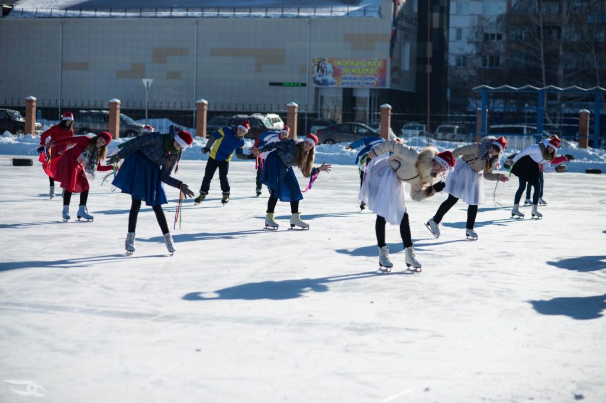
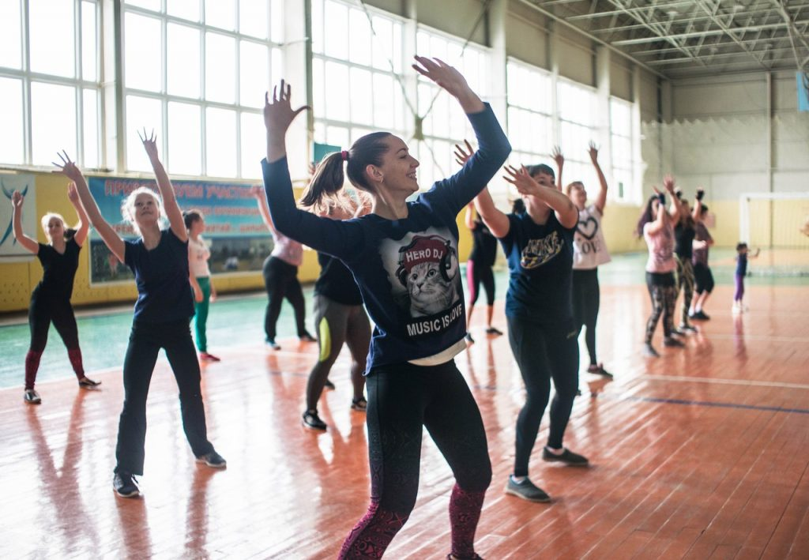
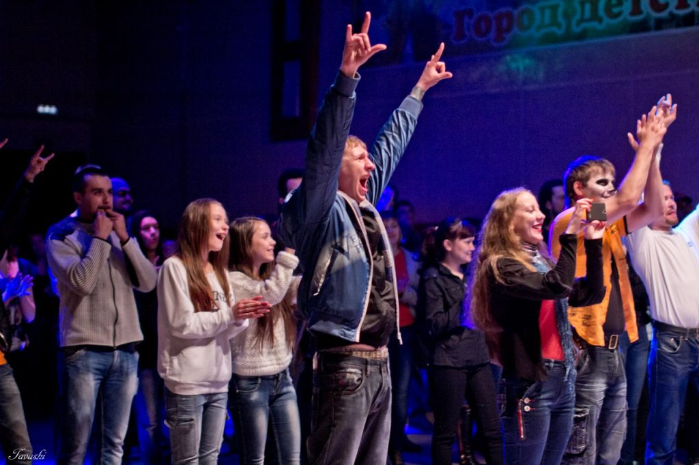

Молодёжь - это, конечно же, КВН. Фестиваль, полуфинал и самые яркие игры в финале. С недавнего времени лига КВН "Куба" разделена на молодёжную и школьную и к нам зачастили гости из соседних городов - Назарова и ЗАТО Солнечного.
В конце зимы стало уже традиционным ещё одно наше мероприятие - "Ледовое шоу". В нём принимают участие любительские коллективы из образовательных учреждений города и вне конкурс выступают профессиональные "катуны". Это вам не вату катать.
Здоровый образ жизни нынче в моде и мы активно этому содействуем. Фестиваль ЗОЖ проходит уже не в первый раз, и не в последний. Присоединяйся к программе "Беги за мной! Сибирь", будь здоров!
"Молодёжка" - это конечно же драйв и энергия, которых в избытке на наших регулярных рок-концертах. Они проводятся и в честь памяти Виктора Цоя, и в рамках Дня Молодёжи и как отдельные события.
Какая "молодёжка" без профессионального праздника? Ежегодно летом мы проводим большой городской праздник на День Молодёжи. Стараемся искать наиболее интересные решения, привозить интересные коллективы и радовать не только молодёжь, но и все поколения, ведь наш город - это единое целое.